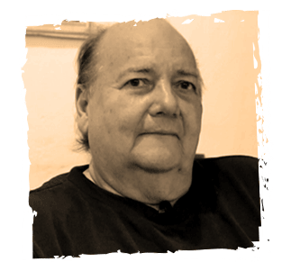

Nacer como hijo sano de padres enfermos de lepra dentro del lazareto de Caño de Loro, Isla Tierra Bomba, llevó a Efraín Oyaga a vivir separado de sus padres por cuatros años, para luego de una larga travesía, reencontrarse con su familia en el antiguo
lazareto de Agua de Dios.